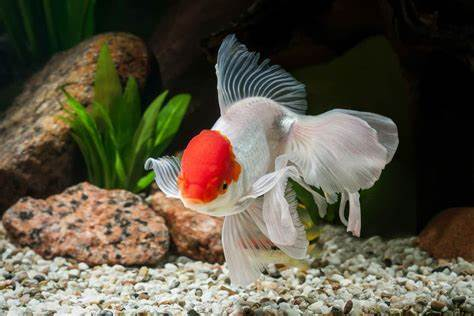
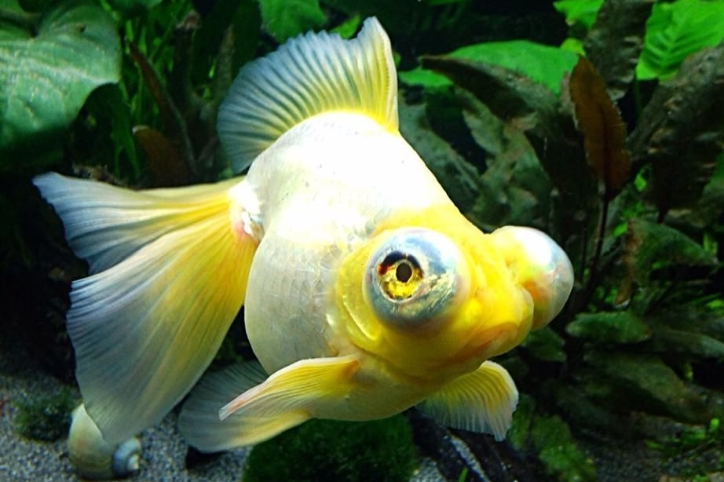
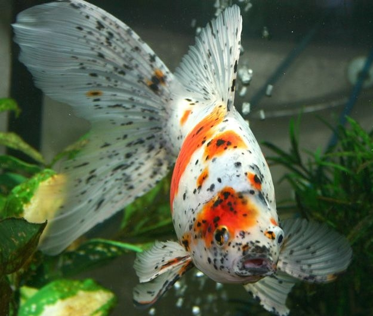
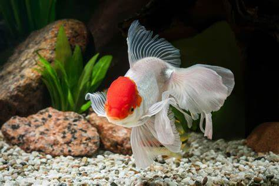
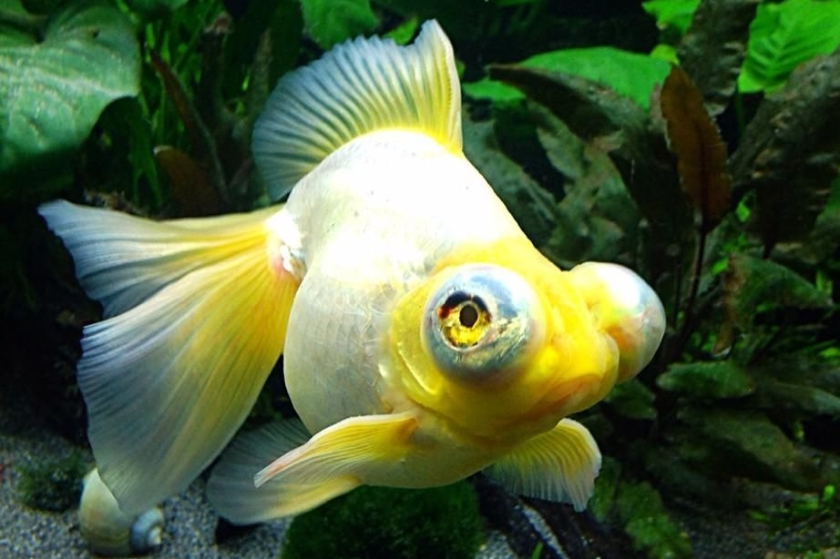
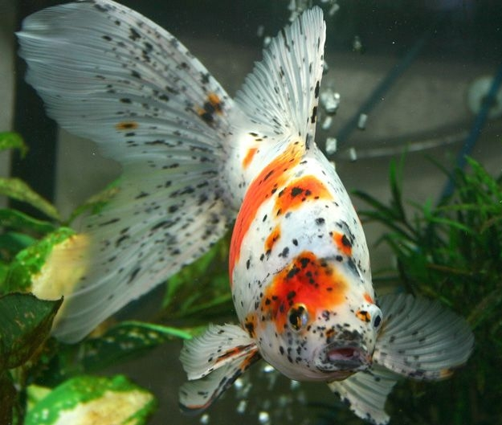

ES INCREIBLEMENTE VARIADO
Estas son solo algunas de las variedades que puedes encontrar en el mercado
  El pez dorado es una de las variedades mas comercializadas a nivel global, nosotros buscamos informar sobre sus cuidados básicos y brindar información para que estos bellos animales tengan la mejor calidad de vida posible
Estas son solo algunas de las variedades que puedes encontrar en el mercado
  